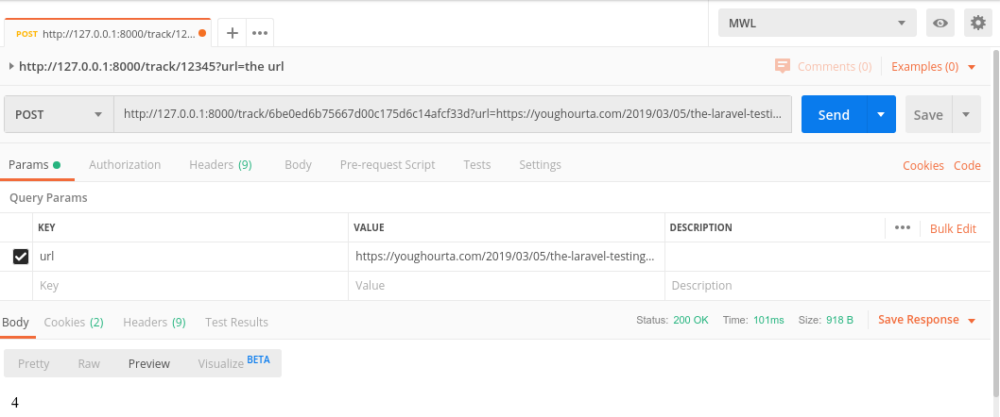
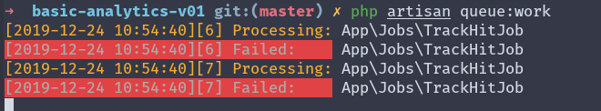

Приложение будет очень простым. Оно позволит нам отслеживать трафик нашего сайта.
Сайт будет отправлять POST-запрос на конкретную конечную точку нашего аналитического инструмента каждый раз, когда пользователь заходит на одну из его страниц. Затем мы вычисляем время, потраченное на каждую страницу, вычитая временные метки двух последовательных POST-запросов.
Давайте сосредоточимся на хранении этих заходов в базе данных. Все, что нам нужно, это конечная точка и контроллер.
Во-первых, давайте создадим две основные модели, которые нам понадобятся, и их соответствующие миграции.
class TrackingController extends Controller
{
public function track($tracker_public_id, Request $request)
{
$tracker = Tracker::where('public_id', $tracker_public_id)->first();
if ($tracker) {
$url = $request->get('url');
$hit = Hit::create(['tracker_id' => $tracker->id, 'url' => $url]);
$previousHit = Hit::where('tracker_id', $tracker->id)->orderBy('id', 'desc')->skip(1)->first();
if ($previousHit) {
$previousHit->seconds = $hit->created_at->diffInSeconds($previousHit->created_at);
$previousHit->save();
return $previousHit->seconds;
}
return 0;
}
return -1;
}
}
Но давайте представим варианты, когда этот код уже не будет достаточно хорош или просто сломается.
Допустим, что скрипт, который отправляет эти запросы, должен по той или иной причине дождаться подтверждения, что запрос получен
Запрос в postman
100 мс — это довольно долго, хотя мы в контроллере и не выполняем никакой существенной обработки. А представьте, что нам нужно выполнить дополнительные действия, плюс несколько запросов к базе данных или даже пообщаться со сторонним API. То есть мы заблокируем скрипт, отправляющий нам запрос (и возможно даже страницу, на которой выполняется этот скрипт), до тех пор пока мы не закончим обработку.
Неважно, запускаете ли вы приложение локально или на продакшене, всегда существует лимит на количества запросов, которые вы можете обработать.
Если вы используете локальный сервер и запускаете свое приложение через php artisan serve, то вы заметите, что сервер может обрабатывать только один запрос за раз.
Если мы выполняем наш код синхронно, как сейчас, это означает, что мы чаще будем утыкаться в этот лимит, так как сохраняем загруженность вебсервера. Вскоре мы заметим, что множество запросов просто отваливается по таймауту. Чтобы решить это нам нужно как можно скорее освобождать соединение.
Еще одна проблема, о которой не сразу и подумаешь, это сбой (например, нет доступа к базе данных, или ошибка в коде, выбрасывающая исключение) при котором мы не можем сохранить запрос и повторить попытку.
В двух словах, Задача — это кусок кода (например, метод), который мы хотим выполнить. И мы помещаем его в Очередь, чтобы отложить его выполнение и делегировать «чему-то другому».
нам просто нужно убедиться, что POST-запрос получен, а затем делегировать оставшуюся часть работы другой части приложения
dispatch(function () use ($parameters) {
// ваш код здесь
});
Но лучше создать выделенный класс задач и затем отправить его вместо этого. Для создания такого класса нам нужно выполнить следующую команду:
php artisan make:job TrackHitJobОна сгенерирует следующий класс: App\Jobs\TrackHitJob
Давайте переместим наш код, из метода track контроллера TrackingController в метод handle класса TrackHitJob
public function handle()
{
$tracker = Tracker::where('public_id', $tracker_public_id)->first();
if ($tracker) {
$url = $request->get('url');
$hit = Hit::create(['tracker_id' => $tracker->id, 'url' => $url]);
$previousHit = Hit::where('tracker_id', $tracker->id)->orderBy('id', 'desc')->skip(1)->first();
if ($previousHit) {
$previousHit->seconds = $hit->created_at->diffInSeconds($previousHit->created_at);
$previousHit->save();
return $previousHit->seconds;
}
return 0;
}
return -1;
}Но как передать аргументы (публичный ID трекера и сам запрос) в код отслеживания?
class TrackHitJob implements ShouldQueue
{
use Dispatchable, InteractsWithQueue, Queueable, SerializesModels;
private string $trackerPublicID;
private string $url;
public function __construct(string $tracker_public_id, Request $request)
{
$this->trackerPublicID = $tracker_public_id;
$this->url = $request->get('url');
}
public function handle()
{
$tracker = Tracker::where('public_id', $this->trackerPublicID)->first();
if ($tracker) {
$hit = Hit::create(['tracker_id' => $tracker->id, 'url' => $this->url]);
$previousHit = Hit::where('tracker_id', $tracker->id)->orderBy('id', 'desc')->skip(1)->first();
if ($previousHit) {
$previousHit->seconds = $hit->created_at->diffInSeconds($previousHit->created_at);
$previousHit->save();
return $previousHit->seconds;
}
return 0;
}
return -1;
}
}namespace App\Http\Controllers;
use Illuminate\Http\Request;
use App\Jobs\TrackHitJob;
class TrackingController extends Controller
{
public function track($tracker_public_id, Request $request)
{
TrackHitJob::dispatch($tracker_public_id, $request);
}
}Если вы попытаетесь отправить POST-запрос так же как вначале, то мы не заметим разницы. Мы всё также видим заходы в таблицы hits. Запрос все также, как и в прошлый раз, занимает примерно то же самое время (~100 мс).
Если открыть файл .env, то обнаружите, что у нас есть переменная QUEUE_CONNECTION равная ‘sync’
QUEUE_CONNECTION=syncэто означает, что мы обрабатываем любые Задачи сразу после их отправки и делаем это синхронно.
Eсли мы хотим получить выгоду от использования очередей, то нам нужно подключить их к чему-то другому. Другими словами, нам нужно место, куда мы можем «поставить в очередь»/сохранить задачи до их обработки.
Есть несколько вариантов. Если вы посмотрите в файл config/queue.php, то увидите, что Laravel из коробки поддерживает сразу несколько видов подключений (“sync”, “database”, “beanstalkd”, “sqs”, “redis”).
Каждый раз, когда мы получаем новую Задачу, она будет сохраняться в базе данных (в специальной таблице). И потом уже оттуда она будет взята и обработана.
QUEUE_CONNECTION=databaseНужно создать таблицу, в которой будут храниться задачи
php artisan queue:table
php artisan migrateТеперь, если отправить запрос POST еще раз, мы увидим следующее:
В таблице hits новых записей нет.
их нет, потому что у нас нет никаких процессов обрабатывающих задачи из очереди. Для этого нужно выполнить следующую команду:
php artisan queue:workКоманда не завершается, она будет ожидать новых задач для обработки
Для того чтобы команды выполнялились параллельно нужно открыть новую вкладку терминала и выполнить ту же самую команду php artisan queue:work
В следующий раз, когда вы отправите несколько POST-запросов в ваше приложение и у вас появится несколько задач в очереди, то заметите, что процессы на обеих вкладках обрабатывают задачи, а это значит, что они обрабатываются параллельно, и чем больше у вас процессов, тем быстрее вы очищаете свою очередь.
Представьте, что вы добавили на свой сервер новый код, который привел к ошибке. Прежде, чем вы её обнаружили прошло некоторое время, а это означает, что все запросы, полученные вашим приложением за этот период, просто не были обработаны. Есть ли способ их не потерять и обработать позже, после исправления вашей ошибки? Ведь нельзя просто попросить своего клиента повторно отправить вам свои запросы (это просто невозможно). К счастью, данные не теряются, и мы можем без проблем повторить попытку обработки проваленных задач.
Когда обработка задачи неудачна, то она сохраняется в таблице failed_jobs. У Laravel есть команда, которая создает миграцию для этой таблицы:
php artisan queue:failed-tableДобавим следующую строку в начало метода handle():
throw new \Exception("Error Processing the job", 1);Обработка задачи будет каждый раз завершаться неудачно. Отправим несколько новых POST-запросов и посмотрим, что произойдет.
php artisan queue:retry allЕсли вы не остановили предыдущий процесс queue:work перед повторной попыткой выполнения задач, вы увидите, что повторные попытки снова завершились неудачно.
Воркеры очереди — это долгоживущие процессы, сохраняющие в памяти состояние загруженного приложения. В результате они не могут увидеть изменения вашего кода после своего запуска. Поэтому после развертывания приложения обязательно перезапустите воркеры.
php artisan queue:listenНо данная команда не такая эффективная как queue:work
// Эта задача будет отправлена в дефолтную очередь...
Job::dispatch();
// Эта задача будет отправлена в очередь "emails"...
Job::dispatch()->onQueue('emails');php artisan queue:work –queue=emailsphp artisan queue:work --queue=jobs,emails